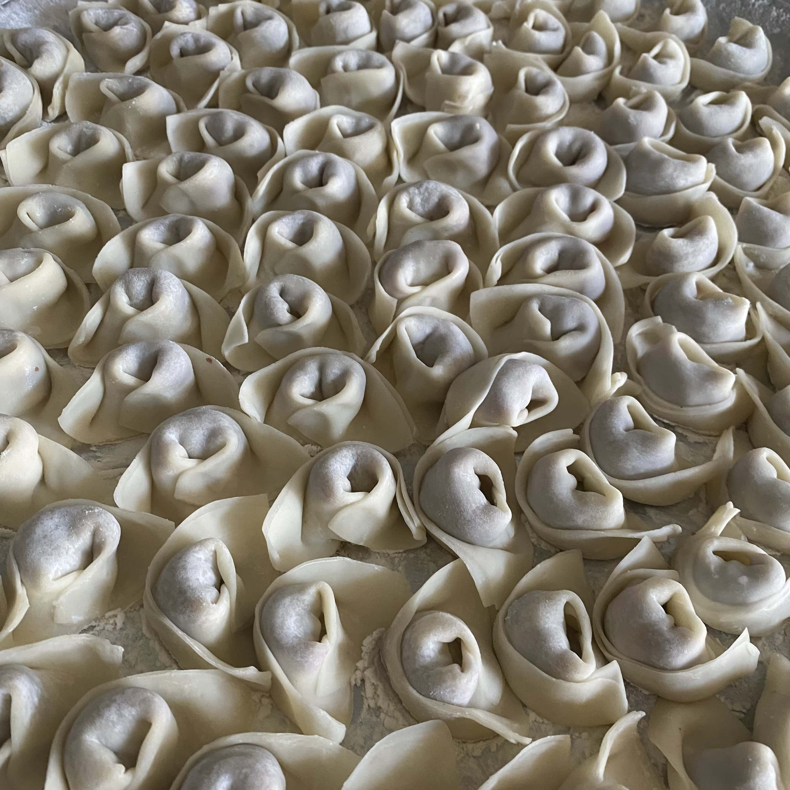
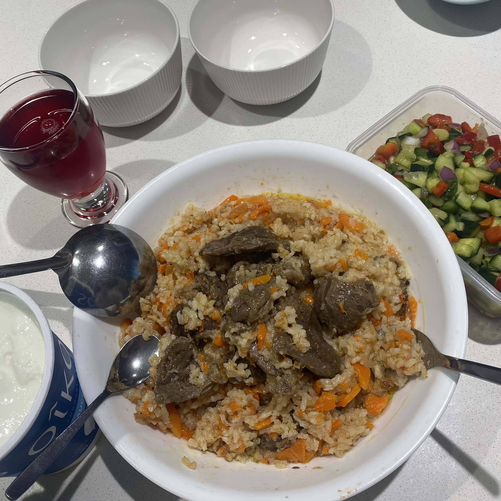

The food I cooked
Chuchure
Chuchure is stuffed dumplings of central Asian origin. Also similar to tortellini and pelmeni.
Plov
Plov is a signature rice dish, commonly found in Central Asian countires.

Currently based in Vancouver, BC.
Chuchure is stuffed dumplings of central Asian origin. Also similar to tortellini and pelmeni.
Plov is a signature rice dish, commonly found in Central Asian countires.